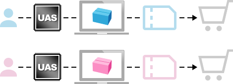

<!DOCTYPE html>
<head>
	<title>uitox e-commerce Group</title>
	<meta charset="utf-8"/>
	<meta content="IE=edge,chrome=1" http-equiv="X-UA-Compatible"/>
	<meta name="description" content="uitox 在過去一年多，潛心發展全AI引擎的工程（簡稱UAS，uitox AI service），讓開店平台機能往前推進一個時代，可稱為電商 4.0 。預計不久後將上線，期望達到下面四個目的：讓企業快速擁有AI驅動的開店平台、AI引擎幫助商品找到對的客人、幫每一個顧客找到當時對的商品、UA(Uitox Analyst)成效分析"/>
	<meta name="keywords" content="uitox,asap 4.0,AI,無人電商"/>
	<meta property="og:type" content="website"/>
	<meta property="og:title" content="uitox e-commerce Group"/>
	<meta property="og:image" content="img/propagate/asap40_01.png"/>
	<meta property="og:description" content="uitox 在過去一年多，潛心發展全AI引擎的工程（簡稱UAS，uitox AI service），讓開店平台機能往前推進一個時代，可稱為電商 4.0 。預計不久後將上線，期望達到下面四個目的：讓企業快速擁有AI驅動的開店平台、AI引擎幫助商品找到對的客人、幫每一個顧客找到當時對的商品、UA(Uitox Analyst)成效分析"/>

	<meta content="width=device-width, initial-scale=1.0" name="viewport"/>
	<link rel="icon" href="img/propagate/uitox.ico"/>
	<link href='css/propagate_uitox.css' rel='stylesheet'/>
	<style>
		.site-footer .copyright{
			margin-top:10px;
		}
		.site-footer .contact{
			flex-flow: column wrap;
		}
		.site-footer .contact p{
			margin:10px 0;
		}
	</style>
</head>
<body>
	<header class="site-header">
		<div class="container">
			<div class="main-head">
				<a href="index.html" class="logo">
                    
                    <h1 itemprop="name">uitox e-commerce Group</h1>
                </a>
				<div class="head_pic"></div>
			</div>
		</div>
	</header>
	<article class="main">
		<h2 class="hide">uitox AI 說明頁</h2>
		<section class="cont">
			<div class="container">
				<div class="cont_l">
					<h2>親愛的客戶</h2>
					<p>uitox 在過去一年多，潛心發展全AI引擎的工程（暱稱UAS，uitox AI service），讓開店平台機能往前推進一個時代，可稱為電商 4.0 。預計不久後將上線，期望達到下面四個目的：</p>
					<ul>
						<li class="blue_txt1">1. 讓企業快速擁有AI驅動的開店平台
							<p>由AI引擎運作，只需極少人力就可以有效運轉，上手容易，先進專業。因應企業的規模及需求，我們提供3種方案：品牌官網；集團官網；電商平台。(詳細請參考下方UAS 三種功能及費率）</p>
						</li>
					</ul>
				</div>
				<div class="cont_r">
					
				</div>
				<ul>
					<li></li>
					<li class="blue_txt1">2. AI引擎幫助商品找到對的客人
						<p>UAS 會用AI 自動行銷工具(喏稱18般武藝)的方式（<a href="#AI18">附錄1</a>）尋找對的客人。發個人EDM，個人對品折價券，可觸及uitox數百萬的會員。也可以在ASAP（ 將重啓為<i class="blue_txt1 bold">ASAP 4.0 </i>）聯合曝光，觸及數百萬會員，經營開店平台不再擔心從零開始，並可減少依賴成本高昂的外包代操網路廣告。</p>
					</li>
					<li class="blue_txt1">3. 幫每一個顧客找到當時對的商品<br/>
						<p class="li_l"></p>
						<p class="li_r">UAS 可計算每一個消費者的偏好商品，再去做一對一行銷(非傳統電商每個人收到的優惠商品都相同)，可避免消費者過分的被干擾而疏離，讓您的電商網站專業又親切。</p>
					</li>
					<li class="blue_txt1">4. UA(Uitox Analyst)成效分析
						<p>提供每個商品的曝光量、點擊率、成交量，您可根據這些數據推估出潛力商品: 未提報的商品若點擊數高、成交量高可以提報AI行銷讓商品賣得更好。需降價商品: 高點擊率但低成交量的商品，可降價。提品廣告前後效益:可觀察提品前後的曝光量、點擊率、成交量數據差異，效益好的商品可加強曝光!</p>
					</li>
				</ul>
			</div>
		</section>

		<section id="rate" class="cont black">
			<div class="container">
				<h2><strong>UAS 開店平台三種功能及費率：</strong></h2>
				<div class="table_scroll">
					<table class="three_temp">
						<tr>
							<th>加盟子網站<br/><small>(只販賣母網站的商品)</small></th>
							<th>品牌官網<br/><small>(可販賣自己及母網站商品)</small></th>
							<th>集團電商<br/><small>(有多供應商或是子網站)</small></th>
						</tr>
							<td class="td_rate"><p>月費：<span class="cost">449</span></p><a href=" https://reurl.cc/247GxX" target="_blank">免費試用三個月 <i class="fa fa-angle-right" aria-hidden="true"></i></a></td>
							<td class="td_rate"><p>月費：<span class="cost">899</span></p><a href=" https://reurl.cc/247GxX" target="_blank">免費試用三個月 <i class="fa fa-angle-right" aria-hidden="true"></i></a></td>
							<td class="td_rate"><p>月費：<span class="cost">39,999</span></p><a href=" https://reurl.cc/247GxX" target="_blank">免費試用三個月 <i class="fa fa-angle-right" aria-hidden="true"></i></a></td>
						</tr>
						
						<tr>
							<td><p class="title blue_txt1">基本規格：</p><p>空間：500GB，流量：500GB，500品內<br/>標準AI功能<br/>網站前台系統<br/>可販售ASAP4.0及其它母網站商品<br/>(無需備貨，原廠直接寄送)。</p></td>
							<td><p class="title blue_txt1">基本規格：</p><p>空間：500GB，流量：500GB，500品內<br/>標準AI功能<br/>網站前台系統<br/>後台系統<br/>*可販售ASAP4.0商品<br/>(無需備貨，原廠直接寄送)。</p></td>
							<td><p class="title blue_txt1">基本規格：</p><p>空間：2TB，流量：2TB，10000品內<br/>標準AI功能<br/>網站前台系統<br/>後台系統<br/>*集團母子網站設定<br/>*多供應商廠服系統<br/>*可販售ASAP4.0商品(無需備貨，原廠直接寄送)。</p></td>
						</tr>
						<tr>
							<td><p class="title blue_txt1">進階AI行銷功能：</p><p>個人對品禮券<br/>個人化EDM發送<br/>AI對外廣告代操<br/>&nbsp;&nbsp;&nbsp;內容媒體，關鍵字媒體，社群媒體</p></td>
							<td><p class="title blue_txt1">進階AI行銷功能：</p><p>個人對品禮券<br/>個人化EDM發送<br/>AI對外廣告代操<br/>&nbsp;&nbsp;&nbsp;內容媒體，關鍵字媒體，社群媒體</p></td>
							<td><p class="title blue_txt1">進階AI行銷功能：</p><p>個人對品禮券<br/>個人化EDM發送<br/>AI對外廣告代操<br/>&nbsp;&nbsp;&nbsp;內容媒體，關鍵字媒體，社群媒體</p></td>
						</tr>
						<tr class="blue">
							<td><p class="title blue_txt1">第三方服務代理費：</p><p>金流費：市價*<br/>超出500GB空間酌收：1.5元/GB/月<br/>超出500GB流量酌收：1.5元/GB/月<br/>進階AI：0.01/人次<br/>APP：設定費2萬，維護費2000/月</p></td>
							<td><p class="title blue_txt1">第三方服務代理費：</p><p>金流費：市價*<br/>超出500GB空間酌收：1.5元/GB/月<br/>超出500GB流量酌收：1.5元/GB/月<br/>進階AI：0.01/人次<br/>APP：設定費2萬，維護費2000/月</p></td>
							<td><p class="title blue_txt1">第三方服務代理費：</p><p>金流費：市價*<br/>超出500GB空間酌收：1.5元/GB/月<br/>超出500GB流量酌收：1.5元/GB/月<br/>進階AI：0.01/人次<br/>APP：設定費2萬，維護費2000/月</p></td>
						</tr>
						<tr>
							<td><p class="title blue_txt1">特點：</p>
								<ul>
									<li>您只要商品上架，網佔佈置AI搞定。</li>
									<li>要促銷商品只要提品，AI幫你曝光在目標客群，客群遠比自己的會員多</li>
									<li>可以使用進階AI產生Landing Page提高成效，降低單位成本。</li>
									<li>可以在uitox集團電商網站聯合曝光，提高成交機會。</li>
								</ul>
							</td>
							<td><p class="title blue_txt1">特點：</p>
								<ul>
									<li>您只要商品上架，網佔佈置AI搞定。</li>
									<li>要促銷商品只要提品，AI幫你曝光在目標客群，客群遠比自己的會員多</li>
									<li>可以使用進階AI產生Landing Page提高成效，降低單位成本。</li>
									<li>可以在uitox集團電商網站聯合曝光，提高成交機會。</li>
								</ul>
							</td>
							<td><p class="title blue_txt1">特點：</p>
								<ul>
									<li>您只要商品上架，網佔佈置AI搞定。</li>
									<li>要促銷商品只要提品，AI幫你曝光在目標客群，客群遠比自己的會員多</li>
									<li>可以使用進階AI產生Landing Page提高成效，降低單位成本。</li>
									<li>可以在uitox集團電商網站聯合曝光，提高成交機會。</li>
									<li>*可以設定集團官網，包含下屬的所有個別官網的商品。</li>
								</ul>
							</td>
						</tr>
						<tr>
							<td></td>
							<td><p class="title blue_txt1">聯合曝光：</p><p>在ASAP 4.0 或 非自官網平台成交收2%</p></td>
							<td><p class="title blue_txt1">聯合曝光：</p><p>在ASAP 4.0 或 非自官網平台成交收2%</p></td>
						</tr>
					</table>
				</div>
				<div class="rate">
					<p>*若您不需要開店平台，只想做一般供應商或是個人賣家，<br/>也可以直接登入 <i>ASAP 4.0</i> 販售，可以享受聯合曝光及 AI 的功能。</p>
				</div>

			</div>
		</section>

		<section class="cont straight">
			<h2 class="hide">UAS的AI引擎核心延伸出18種行銷方式</h2>
			<div class="container">
				<p>UAS的AI引擎核心延伸出18種行銷方式（暱稱18般武藝，<a href="#AI18">附錄1</a> 陸續增加中）接觸顧客，只要您在AI提品系統提品（<a href="#AI19">附錄2</a>）就可以免費行銷曝光，AI會運算有效的TA，選擇多種方式接觸顧客：</p>
			</div>
		</section>

		<section class="cont black">
			<h2 class="hide">UAS的AI引擎核心</h2>
			<div class="container">
				
			</div>
		</section>

		<section id="AI18" class="cont straight">
			<div class="container">
				<h2><strong>附錄1: AI 18般武藝</strong></h2><p>我們的 AI 引擎核心，延伸出各種不同功能的應用（陸續增加中）</p>
				<div class="table_scroll">
					<table class="AI_table">
						<tr>
							<th>行銷工具名稱</th>
							<th>說明</th>
							<th>UAS對供應商的好處</th>
							<th>對消費者好處</th>
						</tr>
						<tr>
							<td>對品折價券</td>
							<td>依照個別會員的偏向(搜尋/點擊喜好、收入高低、性別、年齡)設計出會員當時最有興趣商品一對一折價券。</td>
							<td>可以提品後(自動隱藏賣場)，AI幫我將提報商品折價券提供給uitox數百萬會員中對我商品高度興趣的會員(只有指定會員看得到破盤價)，幫助商品銷售更快!</td>
							<td>隨時可以收到我喜歡的商品可直接折價很貼心，不用再花時間找折價券可以用的商品。</td>
						</tr>
						<tr>
							<td>會員專屬25品</td>
							<td>依照個別會員的偏向(搜尋/ 點擊喜好、收入高低、性 別、年齡)，找出25品，其 中有一品是限時破盤的帶路雞(自動隱藏賣場)，吸引消 費者每日上來搶便宜。</td>
							<td>提品後(自動隱藏賣場)AI幫我找喜歡我商品的會員提供商品專屬破盤優惠資訊(只有指定會員看得到破盤價)，並選出符合每個會員偏好同屬性的24品，幫助官網整體商品銷售更快!</td>
							<td>隨時有我喜歡商品的專屬優惠通知不會漏掉!</td>
						</tr>
						<tr>
							<td>會員個人化首頁</td>
							<td>AI替每個會員計算個別的興趣，產生的一對一的個人化首頁。</td>
							<td>AI可針對每個會員的喜好給不同的首頁選品，不需要花過多時間佈置首頁。</td>
							<td>擁有自已專屬的購物首頁，內容都是我喜歡的。沒有過多擾人的促銷訊息。</td>
						</tr>
						<tr>
							<td>會員個人化搜尋</td>
							<td>消費者輸入關鍵字，列表商品依據這個消費者偏向(搜尋/點擊喜好、收入高低、性 別、年齡)，排優先順序。</td>
							<td>AI可針對每個會員的喜好將站內搜尋做不同的排序，不需要花時間做站內SEO。</td>
							<td>搜尋結果依照我的興趣做優先的排序!可以很快找到需要的商品!</td>
						</tr>
						<tr>
							<td>商品頁物物相連</td>
							<td>在單一商品頁旁列出關聯度高的商品(最貼近消費者當下心意的商品)，增加消費者的方便性提高成交率。</td>
							<td>AI幫我在每一個商品頁旁放上同TA屬性偏好的商品，增加整個官網提單率!</td>
							<td>快速找到下一個我需要的商品，不用再花時間搜尋。</td>
						</tr>
						<tr>
							<td>會員個人化EDM</td>
							<td>依照個別會員偏向(搜尋/點擊喜好、收入高低、性別、 年齡)，找出符合個別會員興趣的25品，以email發出去，也可以在網頁呈現。</td>
							<td>提品後AI幫我用EMAIL的方式發給uitox數百萬會員中對我商品高度興趣的會員。</td>
							<td>EDM可以看到我喜歡的專屬商品，每次開信都有驚喜!</td>
						</tr>
						<tr>
							<td>一對一APP  push</td>
							<td>依照個別會員偏向(搜尋/點擊喜好、收入高低、性別、 年齡)，找出一品（或是少品），push出去，幫助供應商提高成交率。</td>
							<td>若有安裝APP， AI可幫我發一對一的APP PUSH將商品優惠訊息給每個會員。</td>
							<td>可以收到我需要且喜歡商品的專屬推薦! 沒有過多擾人的訊息!</td>
						</tr>
						<tr>
							<td>會員個人生日禮</td>
							<td>幫消費者找好喜歡的商品 再給折扣。</td>
							<td>AI幫我一對一選出當月生日會員喜歡的商品，再給折扣，更有效幫助整體官網銷量提升!</td>
							<td>有我專屬的生日禮很貼心! (喜歡的商品直接折扣，不用再花時間找)</td>
						</tr>
						<tr>
							<td>智慧綁賣</td>
							<td>AI可根據每個會員經常購買的組合，運算出專屬綁賣組合建議，主動推銷給消費者。</td>
							<td>由AI幫我依照每個會員的喜好提供給會員一對一的專屬綁賣組合，更有效幫助官網整體銷量提升!</td>
							<td>有專屬的綁賣組合，都是我喜歡的商品。</td>
						</tr>
						<tr>
							<td>個人節慶不指定商品</td>
							<td>AI依當月節慶/季節/市場熱門偏向去挑和個別會員高度相關的商品，按個別會員的偏向一對一配對給會員專屬推薦。</td>
							<td>不用花時間想非節慶主題包裝，AI可幫我選品，並一對一配對給喜歡的會員，更有效幫助官網整體銷量提升!</td>
							<td>知道節慶熱門什麼商品，可以快速收到我專屬的節慶不指定商品推薦。</td>
						</tr>
						<tr>
							<td>個人節慶指定商品</td>
							<td>1.對於特定節日網站有指定商品集合要優先推薦。<br/>2.AI會從上面指定的商品集合為優先，加其它不指定商品，符合個別會員高度相關的商品。如中秋節為月餅、 烤肉…一對一配對給會員專屬推薦。</td>
							<td>不用花時間想節慶主題包裝，AI可幫我選品，並一對一配對給喜歡的會員，更有效幫助官網整體銷量提升!</td>
							<td>知道節慶熱門什麼商品，可 以快速收到我專屬的節慶指定商品推薦。</td>
						</tr>
						<tr>
							<td>個人社會事件商品</td>
							<td>AI依當月社會事件熱門偏向去挑和個別會員高度相關的 商品，一對一配對給會員專屬推薦。</td>
							<td>不用花時間想社會事件包裝，AI可幫我選品，並一對一配對給喜歡的會員，更有效幫助官網整體銷量提升!</td>
							<td>知道現在熱門什麼商品</td>
						</tr>
						<tr>
							<td>分眾新商品導入</td>
							<td>1.AI分眾導入，讓消費者知道自己常買的東西有新版本。<br/>2.市場上如果有新的商品上市，我們會去尋找興趣度高的客人，主動推薦。</td>
							<td>不用花時間想新品行銷案，AI自動配對給對我新品有興趣的會員。</td>
							<td>知道自己常買的東西有出新版本</td>
						</tr>
						<tr>
							<td>一對一會員喚醒</td>
							<td>若會員太久沒在本網站活動，會根據會員過去的喜好 及當下市場熱門商品提供個人專屬優惠，刺激會員復活。</td>
							<td>不用花時間想如何喚醒沈睡會員，AI可幫我一對一分析每個沈睡會員高度興趣的商品再給折扣，更有效激活會員。</td>
							<td>即使沒有消費，喜歡的商品好康還是收得到!我隨時要上來買還是有優惠。</td>
						</tr>
						<tr>
							<td>外部廣告 (內容媒體)</td>
							<td>分析內容媒體的每一篇文章，依照文章特性讓連結回來的廣告 Landing Page 符合文章的內容及消費者的喜好變換內容。</td>
							<td>1. AI可針對提報商品計算出同屬性商品製作出Landing Page(最多可25品)，幫助整個官網的商品銷售，用最少的費用達到最佳的效果!<br/>2.不需要經驗，AI幫我對外投放內容媒體廣告給喜歡我商品的潛在TA。</td>
							<td>知道自己常買商品的知識。</td>
						</tr>
						<tr>
							<td>外部廣告 (關鍵字媒體)</td>
							<td>分析搜尋引擊的熱門關鍵字，每組關鍵字有一個廣告連結，連結回來的 Landing Page 符合關鍵字的內容及消費者的喜好變換內容。</td>
							<td>1. 可分擔廣告費用，用最少的費用達到最佳的效果!<br/>2.不需受平台控制<br/>3.不需要經驗，AI可幫我投放關鍵字廣告。</td>
							<td>google能快速找到我需要的商品</td>
						</tr>
						<tr>
							<td>外部廣告 (社群媒體)</td>
							<td>分析社群媒體的目標客戶的選項參數，每一組選項參數有一個廣告連結，連結回來的Landing Page 符合社群媒體的內容及消費者的喜好變換內容。</td>
							<td>1. AI可針對提報商品計算出同屬性商品製作出Landing Page(最多可25品)，幫助整個官網的商品銷售，用最少的費用達到最佳的效果!<br/>2.不需要經驗，可AI幫我投放社群媒體廣告給喜歡我商品的潛在TA。</td>
							<td>社群媒體能看到我喜歡商品的推薦和好康!</td>
						</tr>
					</table>
				</div>
			</div>
		</section>

		<section class="cont black">
			<div class="container">
				<h2  id="AI19"><strong>附錄2:  行銷提品系統</strong></h2>
				<ul class="sys">
					<li>● 單品直接提品: <a onclick="window.open('popup/link02.html','單品直接提品','width=1230,height=800,left=20,top=100')">點擊看舉例詳情</a></li>
					<li>● 從已上架的商品提品: <a onclick="window.open('popup/link03.html','從已上架的商品提品','width=1230,height=300,left=20,top=100')">點擊看舉例詳情</a></li>
					<li>● 提品前試算： <a onclick="window.open('popup/link04.html','提品前試算：','width=1230,height=700,left=20,top=100')">點擊看舉例詳情</a></li>
					<li>● UA成效分析： <a onclick="window.open('popup/link05.html','UA成效分析：','width=1230,height=600,left=20,top=100')">點擊看舉例詳情</a></li>
				</ul>
				<p><strong>● AI外部廣告(內部個人化)費用分攤</strong><br/>除了AI站內個人化曝光外，您也可以用分攤費用的方式買外部整合廣告。我們的AI引擎把對外廣告的連結，根據個人化的運算，列出針對每一個消費者興趣的商品群，你的商品在該商品群集合頁只要分擔極低的比例費用。</p>
				<p>AI可將25個同TA商品做成一個整合廣告Landing Page，可和一般單一商品獨立採買廣告觸及人數相同，但費用以商品數均分，若關鍵字透過AI整合廣告費用平均每個商品廣告費為15/25=0.6元，若獨立採買廣告一個廣告只帶到一個商品需負擔全額</p>
				<div class="table_scroll">
					<table class="table_blue AI">
						<tr>
							<th colspan="7">外部廣告費用分攤</th>
						</tr>
						<tr>
							<td class="blue_bg"></td>
							<td colspan="2" class="blue_st">關鍵字廣告</td>
							<td colspan="2" class="blue_st">社群(FB，IG)</td>
							<td colspan="2" class="blue_st">內容媒體廣告</td>
						</tr>
						<tr>
							<td class="blue_bg"></td>
							<td>自行採買</td>
							<td>分攤</td>
							<td>自行採買</td>
							<td>分攤</td>
							<td>自行採買</td>
							<td>分攤</td>
						</tr>
						<tr>
							<td class="blue_bg">引入(次)費用</td>
							<td>15</td>
							<td>15/25=0.6</td>
							<td>2296/天</td>
							<td>92/天</td>
							<td>x</td>
							<td>x/25</td>
						</tr>
						<tr class="sp">
							<td></td>
							<td></td>
							<td></td>
							<td></td>
							<td></td>
							<td></td>
							<td></td>
						</tr>
						<tr>
							<td class="blue_bg"></td>
							<td colspan="6">註：集中同類曝光，消費者更願意點擊進來集合頁，有競爭力的商品更容易被選取而成交。</td>
						</tr>
					</table>
				</div>
				<div class="rate">
					<p>自行採買表示一頁商品為單位採買廣告</p>
				</div>
			</div>
		</section>
	</article>
	<footer class="site-footer">
		<div class="container">
			<div class="contact">
				<a href="https://docs.google.com/forms/d/1dRQGIw9gK3YOvIBPR58tiqBlbDmUs1xFk5V75hdcQLs/edit?ts=5d689c9d" target="_blank" class="btn-join">免費試用UAS三個月</a>
				<p>聯絡我們<a href="mailto:aiservice@uitox.com">aiservice@uitox.com</a></p>
			</div>
			<div class="copyright"><small><span>uitox</span> Copyright© uitox Corporation All right reserved.</small></div>
		</div>
	</footer>
</body>  
</html>
	